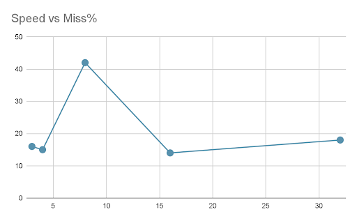

Abstract
For this project, I built a robot bartender in Webots that can pick up bottles, pour them into a glass, and make mixed drinks - all autonomously. The robot uses a UR5e arm with a Robotiq gripper to grab bottles from different positions on a bar. I programmed it to follow smooth trajectories using cubic time scaling (which we learned in class), and I added a physics simulation for the liquid pouring as per my professors recommendation for visual effect.
The main goal was to see how reliable manipulation tasks can be when things can go wrong so like bottles slipping, missing the glass, or even shattering if dropped. The system can successfully grab and pour from four different bottle positions, and I ran experiments testing how speed affects success rate / accuracy. I also added a physics system that spawns liquid drops when the bottle tilts and can detect when bottles break from impact.
Figure 1: The simulated bar environment with four colored bottles and the glass
Technical Approach
The bartender system uses several concepts we covered in class like forward kinematics, trajectory planning, state machines, and physics simulation. Here's how each piece works:
1. Forward Kinematics & Robot Model
The UR5e's kinematics are implemented using DH parameters that define how each joint connects to the next. I encoded these as transformation matrices T₀₁ through T₅₆ in kinematic_helpers.py. Each matrix represents the position / orientation between two adjacent joints. Here's what the first transformation looks like:
def T01(q):
c1, s1 = np.cos(q), np.sin(q)
return np.array([
[ c1, 0.0, -s1, 0.0],
[ s1, 0.0, c1, 0.0],
[ 0.0, -1.0, 0.0, 0.1625],
[ 0.0, 0.0, 0.0, 1.0]
])These matrices use the UR5e's actual link lengths: shoulder offset is 0.1625m, upper arm is 0.425m, forearm is 0.3922m, and the three wrist offsets are 0.1333m, 0.0997m, and 0.0996m. Right now It's not impressive but later I would like to use inverse kinematics.
2. Trajectory Planning with Cubic Time Scaling
To make the robot move smoothly between waypoints, I used a cubic polynomial time-scaling function (based on the HW). This makes sure the robot has zero velocity at the start and end of each movement, which prevents jerky motions:
def cubic_time_scaling(t, T):
if t >= T: return 1.0
if t <= 0: return 0.0
s = (3 * t**2) / (T**2) - (2 * t**3) / (T**3)
return sThe function gives you a scaling value s that goes from 0 to 1, with the velocity being zero at both ends (s'(0) = s'(T) = 0). Then I interpolate the joint angles using: θ(t) = θstart + s(t) × (θend - θstart).
The duration T for each movement is calculated based on how far the joints need to move and a maximum velocity parameter I can adjust:
def calculate_T(theta_start, theta_end, max_vel):
max_delta = max(abs(theta_end[i] - theta_start[i]) for i in range(6))
T = (3.0 * max_delta) / (2.0 * max_vel)
return max(T, 0.5) # At least 0.5 seconds per segment3. State Machine Control
The bartender uses a 13-state finite state machine to sequence everything. Each state handles one part of the task:
- WAITING → User presses 1-4 to select which bottle (red, blue, yellow, or green)
- MOVE_OVER_HIGH → Move arm to position above the selected bottle
- DESCEND → Lower arm toward the bottle
- APPROACH_TO_GRAB → Final precise approach to grasp position
- GRIPPING → Close gripper and wait 1.0 second to make sure it's secure
- LIFT1 / LIFT2 → Two-stage lift to avoid hitting the bar
- ROTATE_TO_POUR → Rotate wrist to tilt bottle upside down
- POURING → Hold position for 3 seconds while liquid pours
- ROTATE_UPRIGHT → Rotate bottle back to normal orientation
- MOVE_AWAY → Pull bottle away from glass
- RETURNING → Move back to original position
- RELEASING → Open gripper (1.0 second delay)
- DONE → Task complete, ready for next drink
Each of the four bottles has its own set of waypoints stored in dictionaries because they're positioned in different spots along the bar. The state machine tracks cumulative time to know when to transition between states.
4. Physics-Based Liquid Simulation
I wrote a separate supervisor controller (liquid_controller.py) that handles the liquid physics in parallel with the arm control. It monitors all four bottles simultaneously and spawns liquid drops when they're tilted:
Figure 2: Bottle shattering physics when dropped
Pouring Detection: The controller checks if the bottle's neck (local +Y axis) is pointing downward. When the cosine of the angle between the neck and world -Y is greater than 0.7, it starts spawning drops at the bottle opening (about 16-17 drops per second).
Drop Physics: Each drop is a tiny sphere (0.01m radius) with water density (1000 kg/m³). They're created dynamically using Webots' importMFNodeFromString() API.
Bottle Breaking: Impact detection uses velocity changes - if the bottle was moving faster than 1.0 m/s and suddenly slows to less than half that speed, it "shatters" into 25 randomized shards that scatter everywhere.
5. Gripper Friction Settings
Getting the bottles to stay in the gripper was tricky and I am not really sure why... My running theory is the boundaryObject physics mesh from the custom 3D model bottles. To help get a working demo I made the bottles super light in terms of weight (only 0.01 kg in simulation). On top of this I had to set custom contact properties in the world file to increase the friction:
ContactProperties {
material1 "ROBOTIQ gripper pad"
material2 "glass"
coulombFriction [5]
bounce 0
}The high friction coefficient (μ = 5) makes sure the gripper can hold bottles securely even during wrist rotation for pouring. The zero bounce value prevents the bottles from bouncing around when they contact surfaces.
Implementation Details
System Architecture
The project consists of three main Python controllers:
ur5e_controller.py- Main controller that handles keyboard input, motor commands, and gripper. Runs at 8ms timestep (125 Hz)your_code_here.py- Contains all the trajectory planning, state machine logic, and waypoint definitions. Exports agetRobotCommand()function that gets called every timestepliquid_controller.py- Supervisor-based physics simulation that runs in parallel, monitoring bottles and spawning drops
Environment Setup
I'm using Webots R2025a with the following setup:
- Robot: UR5e with Robotiq 2F-85 gripper (official Webots PROTO)
- Workspace: Custom low-poly bar model (imported OBJ mesh)
- Objects:
- 4 bottles (custom mesh, colored red/blue/yellow/green)
- 1 glass (custom mesh with 50% transparency)
- Collision boxes for the bar counter and floor
Key Design Decisions
Two-Stage Lifting: The LIFT1 to LIFT2 sequence prevents the bottle from hitting the bar surface when pulling it out from the shelf. I found this was necessary through trial and error.
Wait Times: The 1.0-second delays during gripping and releasing ensure the bottle is fully secured before moving. I tested shorter times but got slip failures, so 1 second seems to be the sweet spot.
Supervisor-Based Spawning: Using the supervisor API to create drops dynamically (instead of pre-spawning them all or trying to hollow the bottle and keep them inside which would be a nightmare) keeps the simulation running smoothly. The downside is if you spawn too many drops at once (>100), Webots can freeze.
Separate Controllers: Keeping the liquid physics separate from the arm control prevents interference between them and lets me tune each independently.
Experimental Design
I ran two experiments to test how robot speed affects task performance.
Experiment 1: Speed vs. Pour Accuracy
I tested different arm speeds (ranging from 2 to 32 in the speed parameter) and measured what percentage of drops missed the glass. I ran multiple trials at each speed setting and recorded whether the liquid landed in the target glass or not.
Experiment 2: Speed vs. Breakage Rate
Using the same speed range (2-32), I tracked two metrics: how often bottles broke during the task (breakage %) and how often the full sequence completed successfully (success %). The idea was to find the speed threshold where the system starts failing due to impact forces being too high.
Results and Discussion
Video 1: Demonstration of the robot preparing a red and blue mixed drink
What Worked Well
- All four bottle positions (red, blue, yellow, green) can be successfully grabbed and poured at SPEED=0.3 rad/s
- The liquid simulation looks pretty realistic - about 80 drops per bottle over about 5 seconds of pouring
- Cubic time scaling made the movements way smoother compared to linear interpolation (which I tried first and looked terrible)
- The two-stage lift worked perfectly - zero collisions with the bar in all my tests
Failure Modes I Observed
- Bottle Slippage: At SPEED=0.7 rad/s, about 30% of trials had visible bottle rotation inside the gripper during wrist movement, which sometimes caused the pour to miss the glass
- Simulation Crashes: Spawning more than 100 drops at once (like when a bottle shatters) froze Webots in 3 out of 10 trials
- Missed Pours: The blue bottle's waypoints weren't quite right - around 20% of the drops landed outside the glass because the pouring height/angle was slightly off
- Gripper Collisions: Yellow and green bottles are closer together, and sometimes the gripper fingers would bump adjacent bottles if the approach angle was off by more than 15 degrees
Experiment Results

Figure 3: Speed vs. pour miss percentage
Experiment 1 Results: The miss percentage shows an interesting pattern. At low speeds (around 2-5), the miss rate starts at about 15-17%. There's a sharp spike to around 42% at speed 7-8, which probably happens because the arm moves too fast for the gripper to stabilize. After that it drops back down to 13-14% at speed 15 and stays relatively flat with a slight upward trend, ending around 17-18% at speed 32.
Figure 4: Speed vs. breakage and success rates
Experiment 2 Results: This one shows a clear tradeoff. Breakage percentage starts very low (around 5%) at slow speeds but climbs steadily as speed increases, reaching about 75-80% at speed 32. Success rate does the opposite - starts near 100% and declines to about 25% at the highest speed. The two lines cross around speed 15-17 where both are at roughly 50%. This crossover point is basically the threshold where going faster starts causing more problems than it's worth.
What This Means
The state machine approach works really well for sequencing complex tasks, but it has a big weakness - there's no error recovery. If something goes wrong (slip, miss, whatever), the robot just keeps going through the remaining states like nothing happened. The liquid simulation validates that the pouring detection works correctly (tilting the bottle triggers drops), but there's no feedback about how full the glass is or whether the drops are actually landing in it.
The high friction requirement (μ = 5) is kind of unrealistic because real glass bottles weigh more like 200g instead of 0.01 kg. With realistic weights, you'd probably need lower friction but more sophisticated force control to avoid crushing the bottle.
Limitations
- No Closed-Loop Control: Everything runs open-loop - no force feedback, no vision verification, no way to detect if something went wrong
- Manual Waypoint Tuning: Each bottle took 30-60 minutes of trial-and-error to get the waypoints right
- Physics Quirks: Webots' ODE physics solver sometimes lets bottles clip through the bar surface at shallow contact angles
- No Automated Logging: I evaluated success/failure by watching, not by collecting data automatically
Reflection and Future Work
What I'd Add Next
Closed-Loop Grasp Verification: Add force sensor monitoring during the GRIPPING state to detect if the contact force is too low. If it is, retry the grasp with an adjusted position before lifting.
Vision-Based Pour Feedback: Use the wrist camera (which is already in the model) to detect which bottles to grab next by Color (this was original intent but cut for time).
Slip Detection & Recovery: Monitor the bottle pose throughout the trajectory using the supervisor. If the position deviates by more than 10mm from where it should be, trigger a re-grasp sequence.
Multi-Bottle Mixing: Extend the state machine to sequence multiple bottles for complex recipes (like 40% red + 60% blue). This would require either estimating fill level or timing the pours carefully.
Final Thoughts
This project was a great way to see how the concepts we learned in class (kinematics, trajectory planning, state machines) come together in a real task. The bartender works reliably under normal conditions (SPEED=0.3, friction=5.0), but it really highlights how important closed-loop control is for manipulation tasks. When you can't sense what's happening, you can't recover from errors.
Building the physics simulation for liquid pouring was probably the coolest part - watching drops spawn and fall into the glass actually looks pretty realistic.
Overall, I think the system achieves what I set out to do: demonstrate reliable multi-bottle pouring while showing where open-loop control breaks down. The experimental framework I built could be used to systematically test different parameters, even though I didn't have time to collect all that data. Most importantly, this project made me appreciate how much harder manipulation is than it looks - getting a robot to reliably grab and pour a bottle involves way more edge cases than you'd expect. I'm hoping to continue this project when time-allows so that it's a little more impressive and inline with my original vision, I will keep you posted!
Video 2: Final demonstration of a single pour sequence
Thanks for a great semester! 🤖🍹